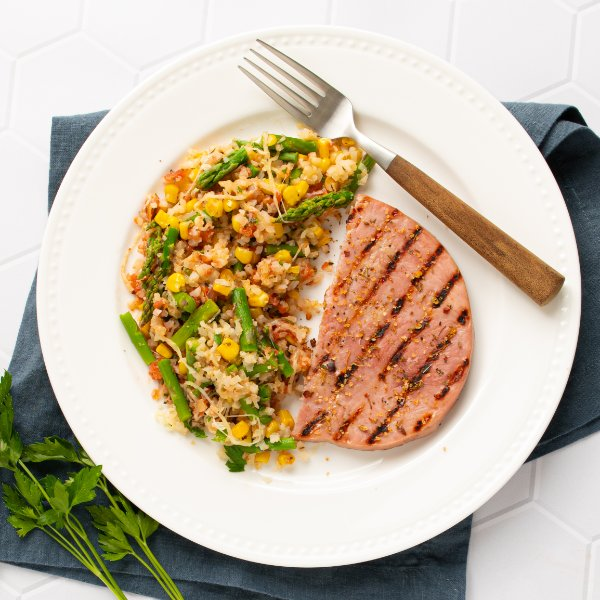

Grilled Cajun Ham with Cheesy Asparagus, Cauliflower Rice & Corn Bake

Prep Time
35 min
Nutrition (per serving)
557.8 kcalCalories
41.5 gProtein
41.3 gCarbs
28.5 gFat
Full nutrition table
| Calories | 557.8 kcal |
| Total fat | 28.5 g |
| Saturated fat | 8.3 g |
| Trans fat | 0.3 g |
| Cholesterol | 75.1 mg |
| Sodium | 4034.9 mg |
| Carbohydrates | 41.3 g |
| Fiber | 10.6 g |
| Sugars | 8.2 g |
| Protein | 41.5 g |
| Potassium | 1830.7 mg |
| Calcium | 413.2 mg |
| Iron | 6.4 mg |
| Vitamin A | 1354.6 IU |
| Vitamin C | 149.6 mg |
| Vitamin D | 0.2 IU |
Cookware
Ingredients
- 2 small bunchesasparagus
- 2 cupsfrozen corn
- 2 (12 oz) bagsfrozen, riced cauliflower
- 16 ozham steak, boneless
- 1 small bunchItalian (flat-leaf) parsley
- 320 mlsalsa
- 1 ⅓ cupsshredded cheese, Italian blend
- Cajun seasoning
- extra virgin olive oil
Steps
- Preheat oven to 450°F.
- Wash, dry, and snap (or cut) off woody ends of the asparagus; cut spears into bite-sized pieces. Transfer to a large baking sheet pan.2 small bunches asparagus
- Add riced cauliflower and corn to the baking sheet with the asparagus; drizzle with oil and sprinkle with Cajun seasoning. Stir to combine and spread out in an even layer.2 (12 oz) bags frozen, riced cauliflower
2 cups frozen corn
3 tbsp extra virgin olive oil
4 tsp Cajun seasoning - Place baking sheet in the oven (it doesn't have to be fully heated) and roast until veggies are starting to soften, about 12 minutes.
- When the veggies are soft, remove from the oven and stir. Return baking sheet to the oven and continue to roast until veggies are tender and golden, 8-10 minutes more.
- Meanwhile, preheat a grill pan, outdoor grill, or skillet over medium-high heat.
- While the pan heats up, cut ham into portions. Sprinkle both sides with additional Cajun seasoning.16 oz ham steak, boneless
2 tsp Cajun seasoning - Once the pan is hot, coat with oil. Working in batches if necessary, add ham steaks and grill, flipping once, until charred and warmed through, about 5 minutes. Remove to a plate and set aside.4 tsp extra virgin olive oil
- While the ham is cooking, wash, dry, and shave parsley leaves off the stems; discard stems and mince the leaves.1 small bunch Italian (flat-leaf) parsley
- When the veggies are done, remove from the oven. Add parsley, cheese, and salsa to the baking sheet, then stir to combine.1 ⅓ cups shredded cheese, Italian blend
1 ⅓ cup salsa - To serve, divide the cauliflower rice bake and ham steaks between plates. Enjoy!